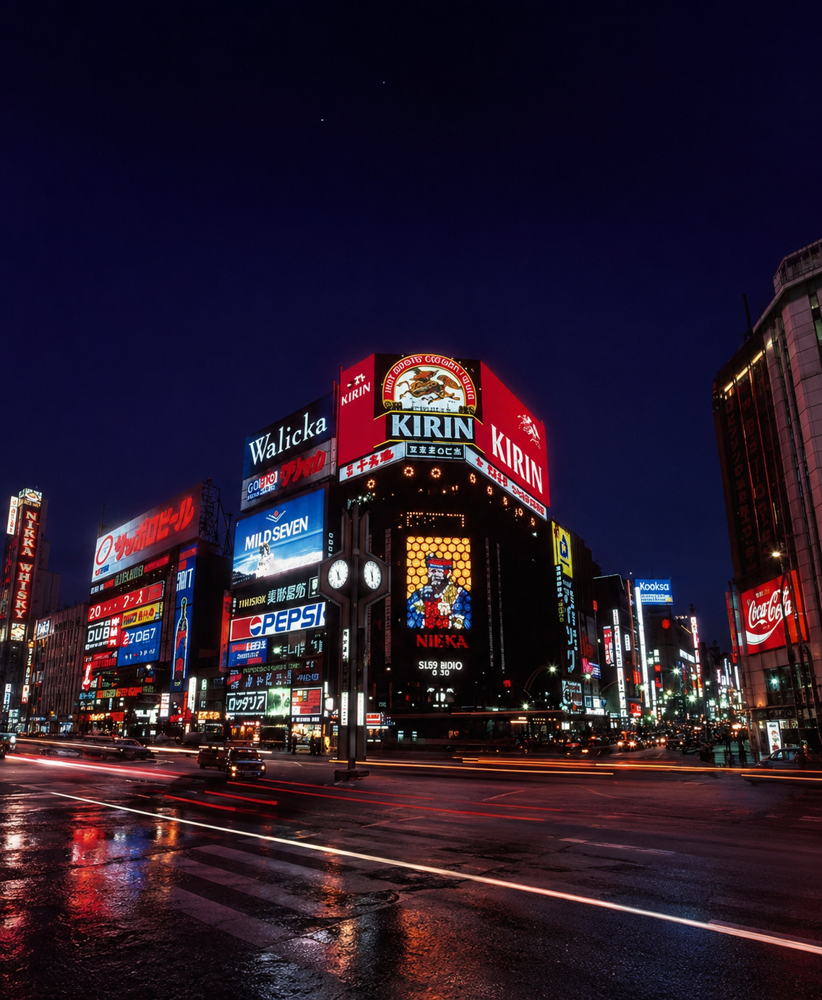
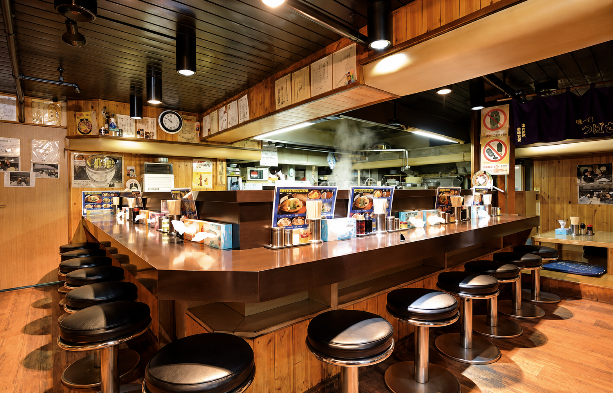

SAPPORO · SUSUKINO味一番
味一番
つばさ
この街で、湯気を上げ続ける。

SIGNATURE 01究極の
究極の
味噌ラーメン
三日間煮込んだスープと特注麺、トロトロチャーシュー。つばさの原点。
¥1,100

SIGNATURE 02つばさ
つばさ
ラーメン
いくら丼とハーフラーメン。究極の味噌と並ぶ、もうひとつの「つばさ」。
¥2,000
まだ、ある。
 バターコーンラーメン
バターコーンラーメン チャーシュー麺
チャーシュー麺 ねぎたっぷりラーメン
ねぎたっぷりラーメン ピリ辛ねぎラーメン
ピリ辛ねぎラーメン 餃子
餃子 チャーハン
チャーハン
OUR COUNTERカウンター越しの
カウンター越しの
札幌の夜。
新ラーメン横丁で、昼から深夜まで。観光の一杯も、仕事帰りの一杯も。
言葉が違っても、
旨さは同じ。

すすきのの真ん中で。
札幌市中央区南4条西3丁目1-1
第3グリーンビル 新ラーメン横丁
11:00 — 03:00
月曜定休